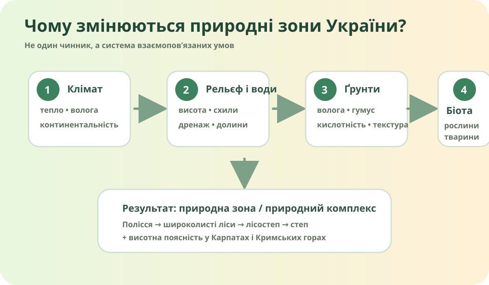

Одна широта — одна природа?
Проблема: дві території можуть лежати майже на одній широті, але мати різну лісистість, зволоження й набір ґрунтів. Чому?

Локальна навчальна схема: кліматичні й місцеві чинники → ґрунти, рослинність, тваринний світ → природна зона.
Спочатку прочитайте просторовий малюнок

Карта природних комплексів України з підручника Гільберг, 8 клас, 2025: мішані й широколисті ліси, лісостеп, степ, Карпати та Кримські гори.
Перевірте карту на сучасному підкладенні
Супутникова картина не підписує «лісостеп» готовою відповіддю, але дозволяє перевіряти земний покрив, лісові масиви й сезонність рослинності.
Посуньте Україну з півночі на південь
вологіше, прохолодніше
перехід
тепліше, сухіше
Перехідна область: співвідношення тепла й вологи дозволяє співіснування лісових і степових комплексів.
Широтна зміна
Головний фон — поступова зміна співвідношення тепла й вологи з півночі на південь.
Меридіональна зміна
Із заходу на схід зростає континентальність клімату: Атлантика слабше пом’якшує температури й режим зволоження.
Азональні «порушники»
Карпати й Кримські гори мають висотну поясність; долини річок, піски, болота й морські узбережжя створюють локальні комплекси всередині зон.
Лісистість змінюється не випадково
За даними Держлісагентства, лісистість України становить близько 15,9%, але різко відрізняється між природними регіонами: Карпати — близько 42%, Полісся — 26,8%, лісостеп — 13%, степ — близько 5,3%.
Перехідні території важливіші за «ідеальні смуги»
Галицький НПП розташований на стику Карпатського регіону й Східноєвропейської рівнини. Тут сусідять ліси, лучно-степові угруповання, річкові долини й передгірні комплекси — наочний приклад того, що межа природних районів у природі не є лінійкою на асфальті.
Що треба знати про природну зону
Географічне положення
Клімат і води
Ґрунти
Рослинність і тварини
Використання й охорона
Природна зона — не просто «тип рослинності». Це великий природний комплекс із закономірним поєднанням клімату, вод, ґрунтів, рослинності й тваринного світу. В Україні рівнинні зони переважно простягаються смугами із заходу на схід, але змінюються і в меридіональному напрямку через зростання континентальності.
Дивимося не все — шукаємо доказ
Фрагмент: межі зони мішаних і широколистих лісів та кліматичні характеристики.
Після відео
Чому природні зони України змінюються і з півночі на південь, і із заходу на схід?
Мій населений пункт у системі природних зон
- Визначте природну зону/край для свого населеного пункту.
- Знайдіть 2 ознаки, які це підтверджують: земний покрив, ґрунти, тип рослинності, режим зволоження або рельєф.
- Назвіть одну місцеву екологічну проблему і поясніть, як вона пов’язана з природним комплексом.